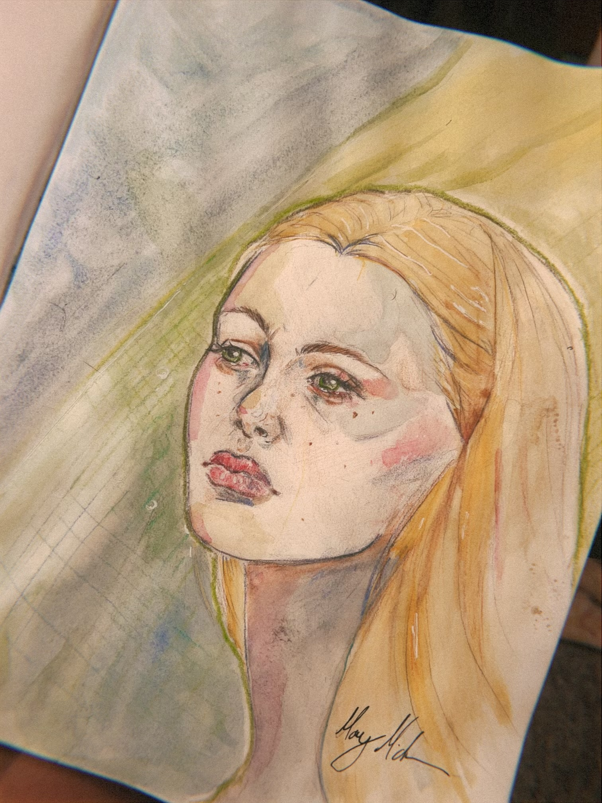
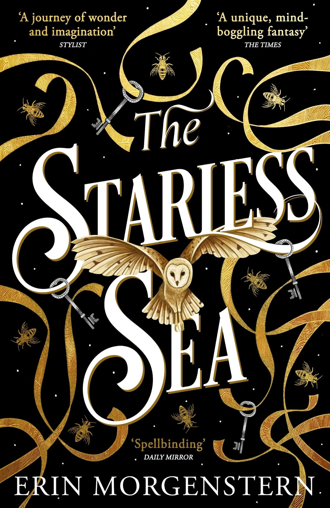

The Starless Sea by Erin MorgernsternIn The Starless Sea, a graduate student named Zachary Ezra Rawlins discovers a mysterious book in his university library.
The book contains a story that seems to be about him, and as he reads it, he is drawn into a fantastical world filled with secret societies, magical doors, and hidden stories.
Zachary embarks on a journey to uncover the truth about the book and its connection to his own life, encountering various characters and challenges along the way.
The novel explores themes of storytelling, memory, and the power of imagination.
